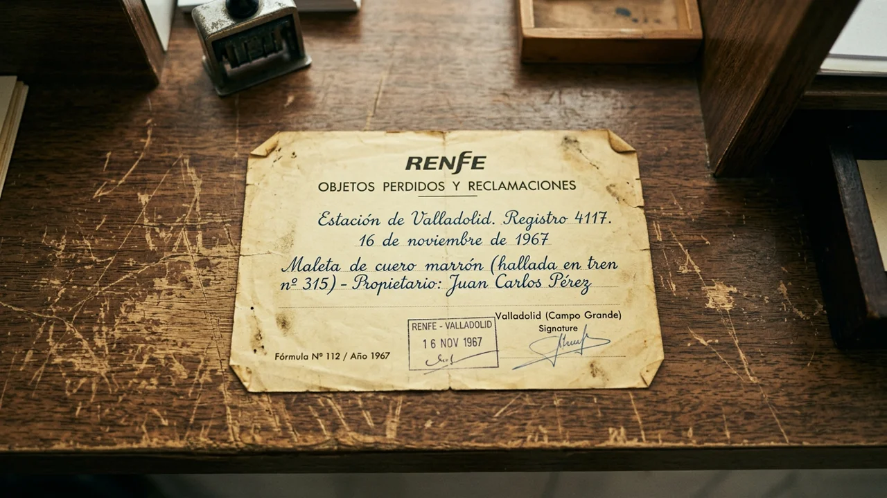
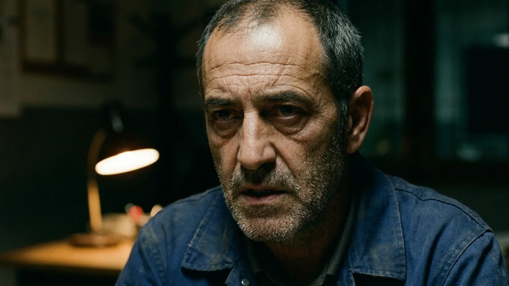
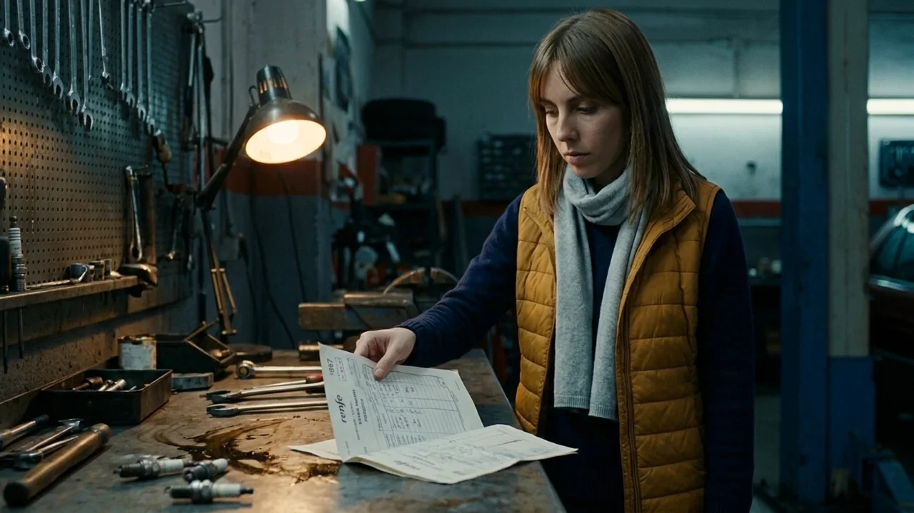
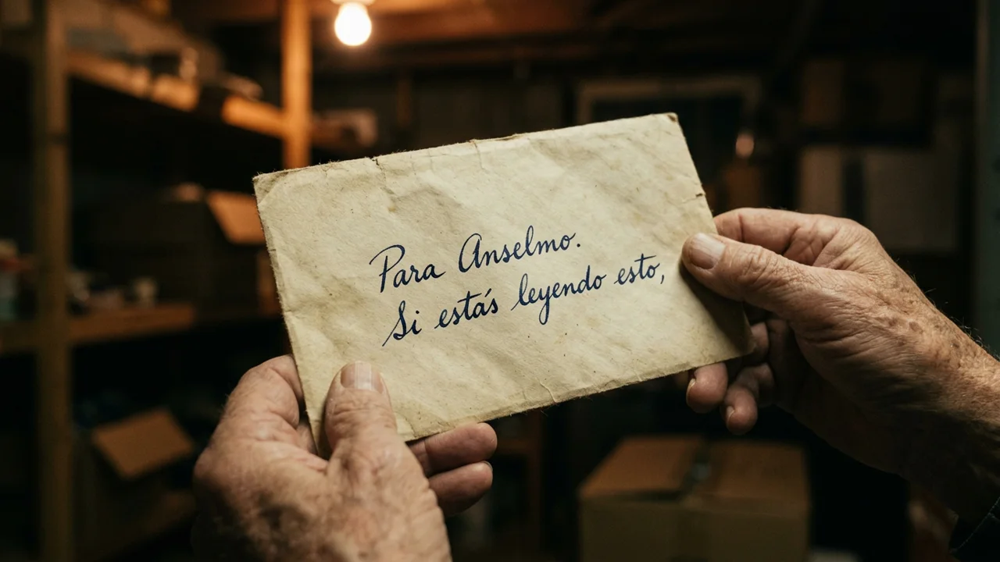
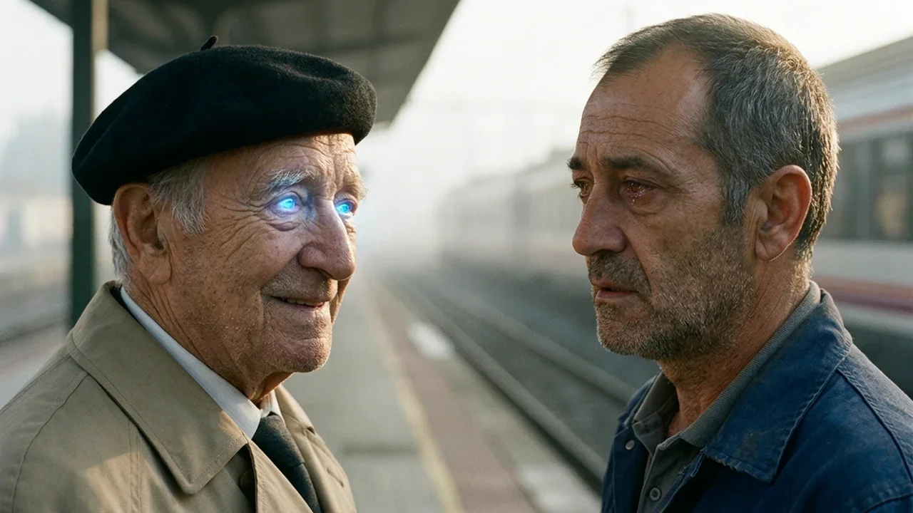

El chasquido del resguardo sobre el mostrador sonaba siempre igual: un golpe seco de papel viejo sobre la fórmica gastada.
A las nueve y cuarenta en punto de una mañana helada de noviembre, Anselmo Recio empujó la puerta de la oficina de objetos perdidos de Valladolid Campo Grande. Llevaba su gabardina beis impecablemente abrochada, boina de paño negro y el afeitado a navaja de quien había trabajado cuarenta años en las vías.
—Buenos días, señorita —dijo el anciano, retirándose la boina con una reverencia de las que ya no se veían—. Vengo a preguntar por mi maleta.
Lucía Garrido llevaba cuatro días de interina en aquel rincón del vestíbulo. Todavía no se acostumbraba al olor: polvo de balasto, goma mojada de paraguas y café rancio de las máquinas. A su espalda, las baldas metálicas se alzaban repletas de bufandas huérfanas, carteras descoloridas y un violonchelo sin funda apoyado contra la pared.
Tomó el papel con cuidado. El resguardo estaba tan doblado que las esquinas parecían pelusa, pero la caligrafía a pluma conservaba un azul nítido: «Renfe. Estación de Valladolid. Registro cuarenta y uno diecisiete. Dieciséis de noviembre de mil novecientos sesenta y siete».
—Mil novecientos sesenta y siete —repitió ella en voz baja.
—Una maleta marrón, de cartón prensado con esquinas de latón —recitó Anselmo con voz pausada—. Correa de cuero con hebilla doble y dos iniciales doradas junto al asa: pe, o. Pe punto, o punto.
Lucía abrió el cajón metálico fingiendo revisar un listado que ya sabía de memoria. Los veteranos del turno de tarde le habían dicho que le diera largas, que le sellara un papel cualquiera y lo dejara marchar. Pero en el temblor de los labios del anciano había una dignidad tan frágil que le encogió el pecho.
—Hoy todavía no ha entrado nada con esa descripción, don Anselmo —respondió ella con suavidad, devolviéndole el resguardo.
El anciano asintió, guardó el papel en el bolsillo interior de la gabardina y sonrió con una certeza que a Lucía le erizó la piel:
—No se preocupe, hija. Mañana vuelvo sin falta, que ella llega en el expreso de las once.
La puerta de cristal volvió a abrirse veinte minutos después con un empujón violento que hizo vibrar el pestillo.
Un hombre corpulento de unos cincuenta y cinco años entró en la oficina con la respiración agitada. Llevaba un mono azul de mecánico manchado de grasa seca, cazadora oscura raída por los codos y unas ojeras moradas de noches enteras en vela.

—¿Ha venido mi padre? —preguntó sin dar los buenos días, plantando las manos tiznadas sobre el mostrador.
Lucía retrocedió un paso por instinto.
—Si se refiere a don Anselmo... acaba de marcharse.
El mecánico se pasó la mano por la frente y soltó un bufido de rabia que sonó a desesperación pura.
—Soy Ramón, su hijo. Le he dicho tres veces a su compañero que no le sigan la corriente. Cada vez que le sellan un papel, el viejo se pasa la noche revolviendo armarios y se escapa de casa a las siete de la mañana.
—Solo intentaba ser amable —se defendió Lucía—. No hace daño a nadie por preguntar.
Ramón clavó en ella una mirada ardiente, cargada de una tensión insoportable.
—¿Que no hace daño? Mañana a las doce viene una ambulancia para ingresarlo en un centro asistencial en Burgos. Tiene demencia vascular y cualquier día me lo encuentro arrollado en una vía. Como vuelva a escaparse de madrugada, perderá la plaza y yo ya no puedo más, señorita. No duermo. No vivo. Deje de alimentar su fantasía con esa maldita maleta.
—¿Y por qué esa maleta y no otra cosa? —preguntó Lucía—. ¿Qué tiene ese resguardo de mil novecientos sesenta y siete?
El rostro de Ramón se contrajo de golpe. Dio medio paso atrás y la señaló con un dedo tembloroso:
—No se meta donde nadie la llama si no quiere problemas con la jefatura. Esa maleta casi arruina a mi familia hace sesenta años y no voy a consentir que una interina venga a desenterrar muertos.
El portazo de Ramón resonó en la oficina mucho después de que sus pasos se apagaran en el vestíbulo.
Lucía intentó concentrarse en inventariar bultos, pero las palabras del mecánico no dejaban de martillearle la cabeza: «Esa maleta casi arruina a mi familia». ¿Por qué un hombre exhausto reaccionaba con tanta violencia ante un papel de hacía medio siglo?

A las dos de la tarde, aprovechando el cambio de turno, Lucía no salió a comer. Descolgó el manojo de llaves maestras y bajó por la escalera de caracol que conducía al archivo subterráneo de la estación.
El sótano era una bóveda de ladrillo macizo, fría y en penumbra, donde las tuberías goteaban sobre charcos de óxido. Guiándose con la linterna del teléfono móvil entre estanterías de hierro, localizó los anaqueles del siglo pasado. Las cajas de cartón deshecho olían a papel húmedo y polvo viejo.
Tras media hora de búsqueda, dio con un libro grueso encuadernado en tela negra: «Registro de Objetos Hallados. Años 1966 a 1969».
Pasó las páginas con el pulso acelerado hasta llegar a noviembre de mil novecientos sesenta y siete. Allí estaba el asiento cuatro mil ciento diecisiete: «16 de noviembre. Maleta marrón, iniciales P. O., localizada en el andén 3 tras la llegada del expreso de Madrid».
Al mirar la columna de salida, un escalofrío le heló la nuca.
La maleta no figuraba como perdida. Aparecía marcada como «Retirada el 20 de noviembre de 1967» con la firma de Anselmo Recio. Y al pie, con un sello violáceo de la antigua Policía Ferroviaria, una anotación manuscrita: «Retención preventiva levantada. Billetes incautados. Pasajera no embarcada por orden familiar».
Lucía se quedó sin respiración en la penumbra. Anselmo había recogido la maleta cuatro días después. Llevaba casi sesenta años guardándola en alguna parte, convencido de que seguía perdida.
A las siete de la tarde, bajo la niebla espesa del paseo de Zorrilla, Lucía empujó la persiana entreabierta de «Talleres Recio».
El taller olía a gasolina, valvulina y serrín húmedo. Al fondo, bajo un fluorescente titilante, un coche descansaba sobre los brazos de un elevador. Debajo, Ramón apretaba una tuerca con una llave de carraca.
—Estamos cerrados —gruñó sin girarse.
Lucía colocó sobre el banco de trabajo la copia de la página del registro, junto a una hilera de bujías.
—Don Anselmo retiró la maleta cuatro días después, Ramón. ¿Por qué le dijo a su padre que seguía perdida?
La herramienta se detuvo en seco.

Ramón tardó un largo minuto en salir de debajo del coche. Se limpió las manos con un trapo sucio, respirando con dificultad al ver el documento. Cuando levantó la vista, su coraza se había quebrado por completo: sus hombros estaban hundidos y en sus ojos había una derrota infinita.
—Pilar Ortega —dijo el mecánico con un hilo de voz ronca—. Mi madre.
Se sentó en una banqueta y apoyó los codos en las rodillas.
—El padre de mi madre era un transportista rico de Medina del Campo, un cacique que no podía ver a mi padre porque era peón de vías. En noviembre del sesenta y siete, mi madre facturó la maleta a escondidas en el tren de la mañana y le mandó un telegrama a mi padre: «Si llega la maleta, voy detrás en el expreso de las once». Era la señal para fugarse y casarse en Valladolid.
Lucía dio un paso hacia él, sobrecogida.
—¿Y qué ocurrió en el andén?
—Su padre descubrió la fuga —continuó Ramón, apretando el trapo—. La encerró bajo llave en el pueblo y la policía retuvo la maleta en el andén tres por orden suya. Mi padre se pasó cuatro días de guardia junto a las vías, loco de angustia, hasta que le devolvieron el bulto. Mi madre tardó tres semanas en escapar por una ventana y llegar a Valladolid con lo puesto. Se casaron, me tuvieron a mí y vivieron cincuenta años juntos sin separarse jamás.
—Entonces... ¿por qué sigue buscando la maleta?
Ramón cerró los ojos y una lágrima abrió un surco claro en el hollín de su mejilla.
—Porque mi madre murió de cáncer hace dos años. Y a los pocos meses, la memoria de mi padre se borró. Olvidó el hospital, olvidó el entierro y olvidó medio siglo de matrimonio. Lo único que le quedó grabado a fuego fue aquel dieciséis de noviembre: el terror a que ella no llegara. Cada noche abría la maleta en el trastero para llorar sobre su ropa, hasta que tuve que esconderla bajo candado para que no se muriera de pena.
El trastero de la vivienda familiar, en un bajo húmedo de la calle Ferrocarril, guardaba el silencio helado del pasado.
Ramón encendió la bombilla desnuda y abrió un candado oxidado. En un rincón, sobre un arcón de pino, reposaba la maleta marrón de cartón prensado con sus esquinas de latón y las iniciales doradas: «P. O.».
—Hay algo más —dijo Ramón, desabrochando las correas de cuero agrietado—. Algo que encontré al vaciar los armarios y que mi padre jamás llegó a ver.

Abrió la tapa.
Bajo un intenso aroma a alcanfor y lavanda seca, descansaba un vestido de novia de seda marfil cuidadosamente doblado, con botones de nácar en la espalda y unos zapatos de tacón bajo envueltos en papel.
Ramón metió los dedos en el forro lateral y tiró de una costura deshilachada. De un doble fondo extrajo un sobre amarillento con una caligrafía temblorosa de mujer joven: «Para Anselmo. Si estás leyendo esto».
A Lucía se le encogió el corazón.
—¿La leyó su padre alguna vez? —susurró.
—Nunca —respondió Ramón con un nudo en la garganta—. Mi madre la cosió ahí la víspera de la fuga, cuando creía que su familia la mataría si la descubría. En la carta le pedía perdón, le decía que tenía miedo de no ser bastante valiente para subir al tren y que, si la maleta llegaba sola, rehiciera su vida y la olvidara. Al final tuvo el valor de escapar, pero esa carta se quedó ahí dentro, como un secreto enterrado. Si mi padre la lee ahora con la demencia, creerá que mi madre lo abandonó.
Lucía miró el vestido de seda, la maleta gastada y los ojos rotos de Ramón. Faltaban catorce horas para que llegara la ambulancia de la residencia.
—No va a leer la carta, Ramón —dijo Lucía con firmeza serena—. Su padre no necesita explicaciones del pasado. Lo único que necesita saber es que la maleta no se perdió. Que la promesa se cumplió.
A las nueve y cuarenta de la mañana, la niebla invernal envolvía la estación de Valladolid en un silencio espeso.
En la oficina de objetos perdidos, sobre el mostrador, la maleta marrón de cartón prensado esperaba con una etiqueta oficial de Renfe recién atada al asa, timbrada con tinta roja y sellada por la jefa de estación.
La puerta de cristal tintineó.
Anselmo Recio entró con su gabardina impecable, su boina calada y el resguardo de mil novecientos sesenta y siete temblando entre sus dedos enguantados.
—Buenos días, señorita. Vengo por...

La voz se le quebró en seco.
El anciano se detuvo en seco. Sus ojos claros se abrieron de par en par, fijos en las dos letras doradas bajo el fluorescente: «P. O.». Dio dos pasos vacilantes, apoyó las palmas arrugadas sobre el cartón y acarició el latón de las esquinas con una ternura infinita, como si tocara el rostro de una persona viva.
—Ha llegado —susurró Anselmo con una sonrisa limpia, despojada de toda sombra—. La maleta ha llegado.
Lucía le acercó el libro de firmas con los ojos húmedos.
—Todo en regla, don Anselmo. El registro queda cerrado.
El anciano empuñó el asa de cuero con una fuerza insospechada en sus ochenta y cuatro años y giró sobre sus talones.
—Muchas gracias, hija. Ahora tengo que bajar al andén tres. Ella llega en el de las once.
Lucía lo siguió con la mirada hasta el vestíbulo.
Junto a las puertas de la estación, dos sanitarios fumaban junto a una ambulancia blanca con el rótulo de la residencia de Burgos. Uno de ellos sostenía la carpeta con la orden de ingreso forzoso.
Ramón estaba de pie en mitad del vestíbulo, con una cazadora limpia y el rostro sereno. Vio pasar a su padre con la maleta en la mano, caminando erguido y seguro hacia las vías como si tuviera veinticinco años y todo el porvenir por delante.
El sanitario dio un paso hacia Ramón levantando el bolígrafo:
—¿Ramón Recio? Tenemos el vehículo listo para el traslado.
Ramón miró la carpeta, miró la espalda de su padre alejándose hacia la marquesina histórica y, sin dudar un instante, tomó la orden de traslado y la rasgó limpiamente por la mitad.
—El traslado queda cancelado —dijo con voz firme—. Mi padre se queda conmigo.
Caminó a paso rápido hasta alcanzar a Anselmo en el andén tres. El viento frío del norte silbaba entre los arcos de hierro y cristal, pero el sol rompía ya las nubes sobre los raíles húmedos.
Anselmo dejó la maleta junto a sus pies y se sentó en el banco de madera de la vía tres, alisándose la gabardina con orgullo. Ramón se sentó a su lado, le pasó el brazo por los hombros para protegerlo de la corriente y le apretó la mano con fuerza.
A lo lejos, doblando la curva del pinar, sonó el silbato largo y alegre de una locomotora que se acercaba.
—Ya pita el expreso, hijo —dijo el viejo con los ojos brillantes de gozo—. Te dije que vendría.